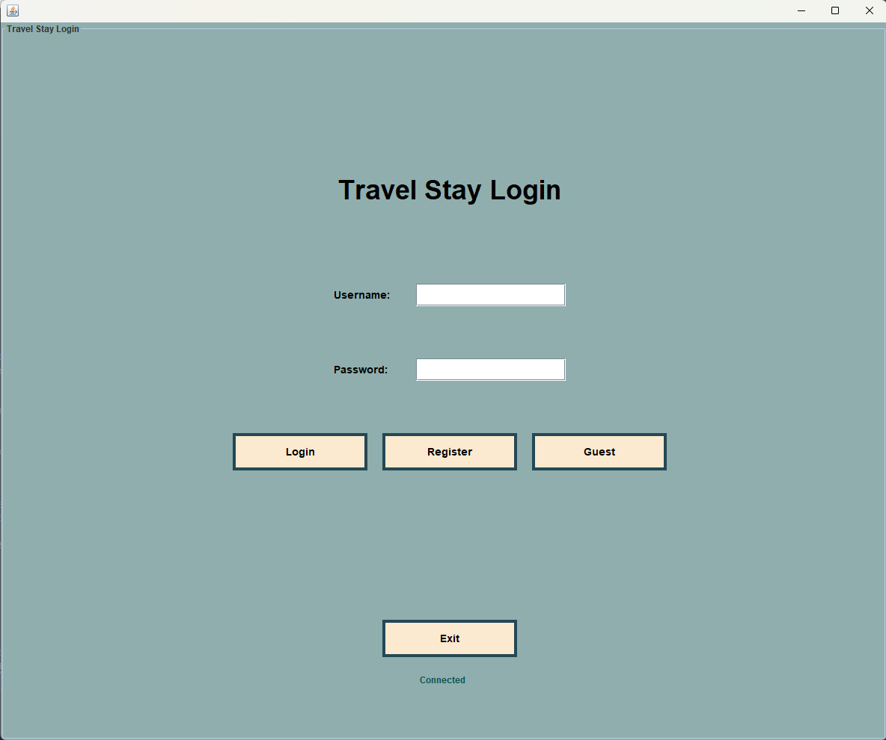
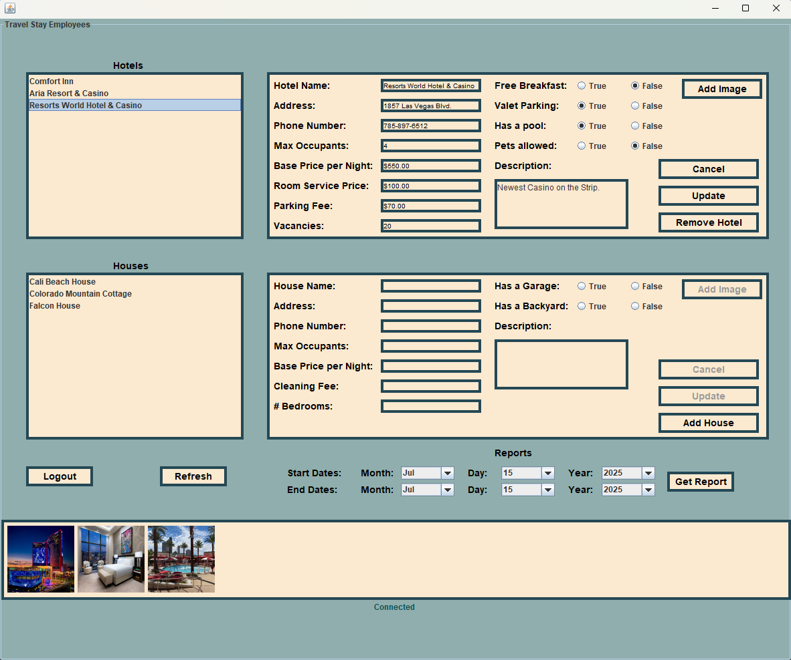
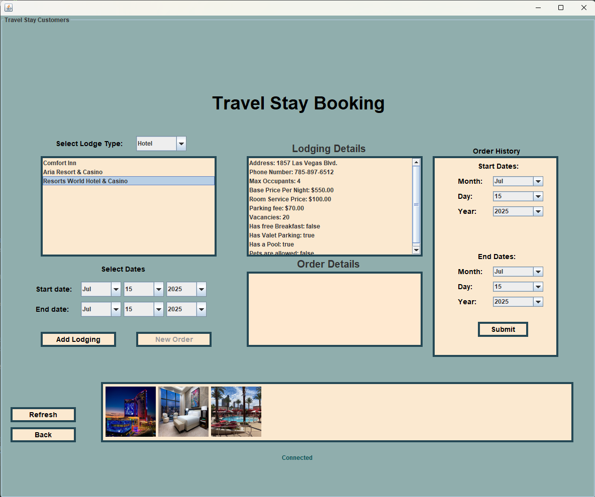
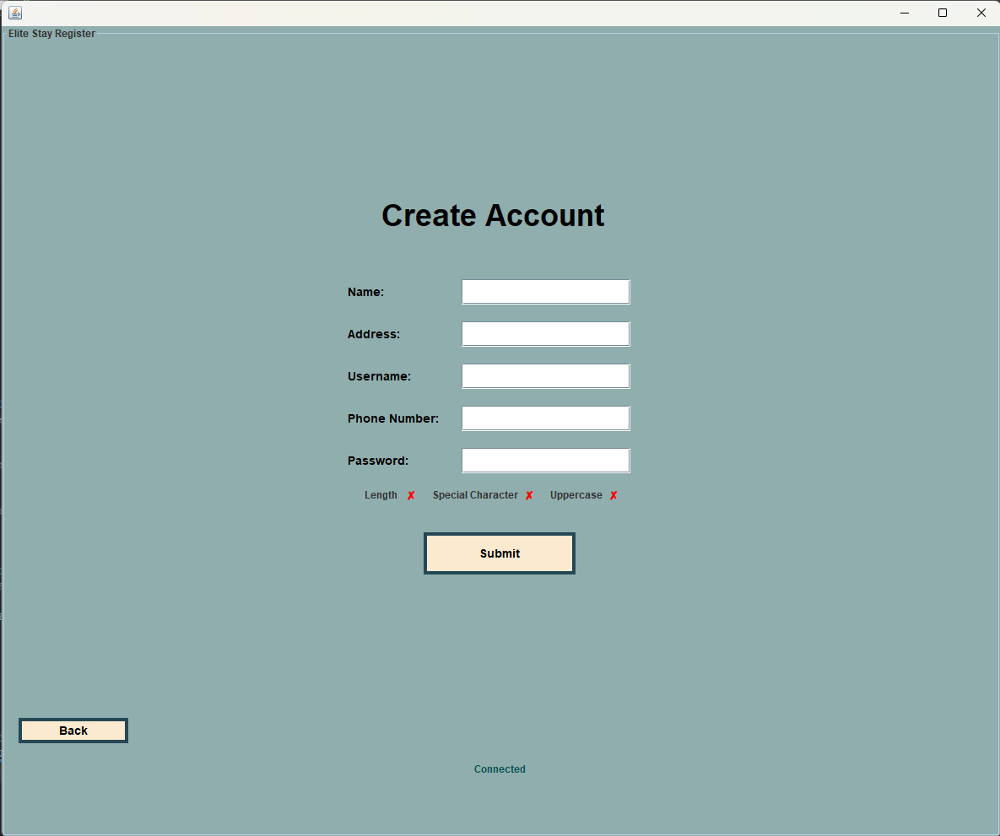

Travel Stay Application
Travel Stay is a Java-based application with a remote SQL Server database. It allows users to create accounts, browse available lodgings, book stays, and review order history. Managers can access detailed booking reports, manage lodging listings, and upload images. The app features a connection verification system that displays the current database status ("Connected" or "Disconnected") at the bottom of each screen, ensuring users are informed of their connection in real time. Built with object-oriented programming, polymorphism, and multithreading, this early project focuses on functionality over graphical design.
Login Screen

The login screen allows users and managers to securely access their accounts. It validates credentials and directs users to their respective views.
Manager View

The manager view provides access to booking history within a selected timeframe, including detailed reports showing who booked and how much they spent. Managers can also add, edit, or remove lodgings and upload images to showcase each property.
Customer View

Customers can browse available lodgings, books stays, and view their order history through a user-friendly interface designed for seamless interaction.
Account Creation

New users can create accounts by providing essential information. The system ensures data validation and creates secure profiles for booking management.
Technologies & Tools
- Java
- SQL Server
 View on GitHub
View on GitHub